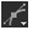
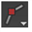
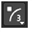

任何给定的 RotoPaint 节点都可以包含几个形状，您可以使用以下任何工具绘制它们。
|
图标 |
工具 |
键盘快捷键 |
函数 |
|
 |
贝塞尔 |
V (在贝塞尔之间切换,
|
应用贝塞尔形状。贝塞尔形状是使用控制点和切线定义的。 |
|
 |
尖头贝塞尔 |
V |
应用具有尖角且没有切线的贝塞尔形状。 |
|
 |
B-样条 |
V |
应用 b样条形状。与 Bezier 形状不同，B-spline 仅通过使用控制点创建。点之间相互关系的位置决定了形状由什么样的样条线组成。 |
|
|
椭圆 |
V |
应用椭圆形状的贝塞尔形状。 |
|
|
矩形 |
V |
应用矩形贝塞尔形状。 |
|
|
尖头矩形 |
V |
应用具有尖角且没有切线的矩形贝塞尔形状。如果移动至少一个控制点，您可以看到矩形和尖头矩形之间的差异。 |
|
|
开放花键 |
V |
允许您以与其他形状相似的方式绘制曲线，只是它们不需要形成封闭形状。 |
RotoPaint 工具栏中的单独选择工具允许您在绘制笔画/形状后对其进行更改 (请参见 选择现有笔划/形状进行编辑 )。
提示:
您可以选择让 RotoPaint 始终打开，并选择特定的工具。例如，如果要在选择 Bezier 工具的情况下打开它，请执行以下操作:
1。创建一个名为
Menu.py
在你的插件路径目录中，如果一个已经不存在。有关插件路径目录的更多信息，请参见
加载 Gizmos 、 NDK 插件以及 Python 和 Tcl 脚本
.
2。要选择 Bezier 作为默认工具，请在您的
Menu.py
:
Nuke.knobDefault (“rotopaint.Toolbox”，“bezier”)
3.重启
Nuke
.
有关默认工具的更多信息，请参见
设置默认 RotoPaint 工具和设置
.
提示: 如果您开始绘制形状，然后决定使用 PlanarTracker 节点平面跟踪这些形状，您可以通过在 “描边/形状” 列表中右键单击形状并选择 平面轨道 。这将为形状创建一个新的平面跟踪层，并将形状附加到该层。有关 PlanarTracker 的更多信息，请参见 用 PlanarTracker 跟踪 .
|
|